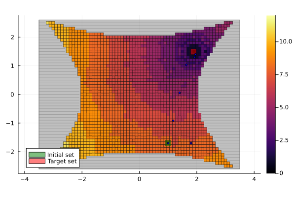
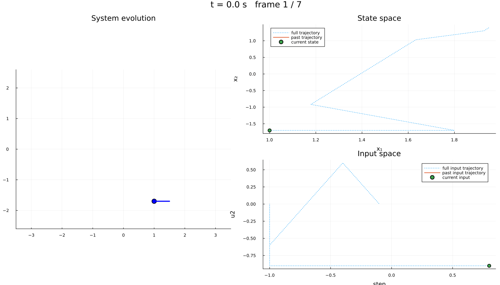

Unicycle robot: a discrete-time model with a custom growth bound
| System | 3-D discrete-time, nonlinear |
| Specification | reach-avoid |
| Solver | uniform grid abstraction |
A mobile cart drives in the plane. Its state is the position $(x_1, x_2)$ and the heading $x_3$; the inputs are the linear and angular velocities. Unlike the other examples the model is already discrete in time, so the dynamics are written with Δ rather than ∂ and no sampling step is involved:
\[x^+ = \begin{bmatrix} x_1 + u_1 \cos(x_3) \\ x_2 + u_1 \sin(x_3) \\ x_3 + u_2 \end{bmatrix}.\]
The cart must reach a reference position while staying inside $\{x_1^2 - x_2^2 \le 4,\; 4x_2^2 - x_1^2 \le 16\}$. That region is not a box, so its complement is covered by rectangles and declared as obstacles.
Adapted from the numerical experiments of (Azaki et al., 2022; Sec. 5).
using StaticArrays, JuMP, Plots
using Symbolics, MathOptSymbolicAD
using Dionysos
const DI = Dionysos
const UT = DI.Utils
const ST = DI.System
const MP = DI.MappingDionysos.MappingThe model
hx = 0.1
x_low = [-3.5, -2.6, -pi]
x_upp = -x_low
model = Model(Dionysos.Optimizer);
@variable(model, x_low[i] <= x[i = 1:3] <= x_upp[i])
@variable(model, -1 <= u[1:2] <= 1);Δ marks a discrete-time model. The modulo $2\pi$ on the heading is left out: Dionysos can treat a coordinate as periodic, but this example does not need it.
@constraint(model, Δ(x[1]) == x[1] + u[1] * cos(x[3]))
@constraint(model, Δ(x[2]) == x[2] + u[1] * sin(x[3]))
@constraint(model, Δ(x[3]) == x[3] + u[2])
x_initial = [1.0, -1.7, 0.0]
x_target = [sqrt(32) / 3, sqrt(20) / 3, -pi]
@constraint(model, start(x[1]) in MOI.Interval(x_initial[1] - hx, x_initial[1] + hx))
@constraint(model, start(x[2]) in MOI.Interval(x_initial[2] - hx, x_initial[2] + hx))
@constraint(model, start(x[3]) in MOI.Interval(x_initial[3] - hx, x_initial[3] + hx))
@constraint(model, final(x[1]) in MOI.Interval(x_target[1] - hx, x_target[1] + hx))
@constraint(model, final(x[2]) in MOI.Interval(x_target[2] - hx, x_target[2] + hx))
@constraint(model, final(x[3]) in MOI.Interval{Float64}(-pi, pi))\[ \textsf{final}\left({x_{3}}\right) \in [-3.141592653589793, 3.141592653589793] \]
The admissible region is described by two quadratic inequalities. ∉ takes boxes and bounded LazySets, not arbitrary sublevel sets, so the forbidden region is rasterised on a grid and covered by maximal horizontal rectangles.
function extract_rectangles(matrix)
isempty(matrix) && return []
n, m = size(matrix)
tlx, tly, brx, bry = Int[], Int[], Int[], Int[]
for i in 1:n
j = 1
while j <= m
if matrix[i, j] == 1
j += 1
continue
end
push!(tlx, j)
push!(tly, i)
while j <= m && matrix[i, j] == 0
j += 1
end
push!(brx, j - 1)
push!(bry, i)
end
end
return zip(tlx, tly, brx, bry)
end
function get_obstacles(lb, ub, h)
x1 = range(lb[1]; stop = ub[1], step = h)
x2 = range(lb[2]; stop = ub[2], step = h)
X1 = x1' .* ones(length(x2))
X2 = ones(length(x1))' .* x2
admissible = ((X1 .^ 2 .- X2 .^ 2) .<= 4) .& ((4 .* X2 .^ 2 .- X1 .^ 2) .<= 16)
return [
MOI.HyperRectangle([x1[a], x2[b]], [x1[c], x2[d]]) for
(a, b, c, d) in extract_rectangles(admissible)
]
end
for obstacle in get_obstacles(x_low, x_upp, hx)
@constraint(model, x[1:2] ∉ obstacle)
endThe abstraction
This example supplies a growth bound map directly rather than a Jacobian bound: given a cell radius r and an input, it returns the radius of a box containing the successors. It is a radius, so it must be nonnegative for every admissible input — hence abs(u[1]).
function growth_bound(r, u)
β = abs(u[1]) * r[3]
return SVector{3}(β, β, 0.0)
end
set_attribute(model, "growthbound_map", growth_bound)
set_attribute(
model,
"state_grid",
MP.GridFree(SVector(0.0, 0.0, 0.0), SVector(hx, hx, 0.2)),
)
set_attribute(model, "input_grid", MP.GridFree(SVector(1.1, 0.0), SVector(0.3, 0.3)))
set_attribute(model, "print_level", 0);Solving
optimize!(model);┌ Warning: Noise is not yet accounted for in system abstraction.
└ @ Dionysos.Optim.Abstraction.UniformGridAbstraction ~/.julia/packages/Dionysos/gFZKe/src/optim/continuous_systems/UniformGridAbstraction/alternating_simulation_problem.jl:642
┌ Warning: The `state_cost` is not yet fully implemented
└ @ Dionysos.Optim.Abstraction.UniformGridAbstraction ~/.julia/packages/Dionysos/gFZKe/src/optim/continuous_systems/UniformGridAbstraction/optimal_control_problem.jl:162Results
termination_status(model)OPTIMAL::TerminationStatusCode = 1abstract_system = get_attribute(model, "abstract_system");
abstract_value_function = get_attribute(model, "abstract_value_function");
concrete_problem = get_attribute(model, "concrete_problem");Closed loop
trajectory = Dionysos.simulate(model, SVector(x_initial...); nsteps = 100)Dionysos.System.Trajectory{StaticArraysCore.SVector{3, Float64}, Vector{StaticArraysCore.SVector{2, Float64}}, Nothing, Nothing, Nothing}(StaticArraysCore.SVector{3, Float64}[[1.0, -1.7, 0.0], [1.8, -1.7, -0.8999999999999999], [1.1783900317293354, -0.9166730903725167, -1.7999999999999998], [1.4055921264224223, 0.057174540505678606, -1.7999999999999998], [1.632794221115509, 1.0310221713838739, -2.4], [1.9277517073320072, 1.3012074436043342, -1.7999999999999998], [1.9504719168013158, 1.3985922066921535, -1.7999999999999998]], StaticArraysCore.SVector{2, Float64}[[0.8, -0.8999999999999999], [-1.0, -0.8999999999999999], [-1.0, 0.0], [-1.0, -0.6], [-0.3999999999999999, 0.6], [-0.09999999999999987, 0.0]], nothing, nothing, nothing)Visualisation
The specification sets are 3-D, so they are projected onto the plotted plane explicitly: plot!(concrete_problem) would hand LazySets a 3-D polytope, which needs a convex-hull backend. Everything else already defaults to dims = [1, 2].
fig = plot(; aspect_ratio = :equal)
plot!(concrete_problem.system.X; color = :grey, opacity = 0.5, label = "")
plot!(abstract_system; value_function = abstract_value_function)
plot!(
UT.project_set(concrete_problem.initial_set, [1, 2]);
color = :green,
opacity = 0.5,
label = "Initial set",
)
plot!(
UT.project_set(concrete_problem.target_set, [1, 2]);
color = :red,
opacity = 0.5,
label = "Target set",
)
plot!(trajectory; ms = 2.0, with_arrows = false, lw = 2, color = :blue)
The cart is drawn inline: unlike the other examples this one has no problem module in problems/ to borrow a view from, and a dozen lines of plot! is not worth a new one.
function cart_plot!(fig, x, u)
θ = Float64(x[3])
c = SVector(Float64(x[1]), Float64(x[2]))
head = c + 0.5 * SVector(cos(θ), sin(θ))
scatter!(fig, [c[1]], [c[2]]; markersize = 7, color = :blue, label = "")
plot!(fig, [c[1], head[1]], [c[2], head[2]]; lw = 3, color = :blue, label = "")
xlims!(fig, x_low[1], x_upp[1])
ylims!(fig, x_low[2], x_upp[2])
return fig
end
anim = Dionysos.animate_trajectory_dashboard(
cart_plot!,
trajectory;
xdims = (1, 2),
udims = (1, 2),
Δt = 1.0,
xlabel_state = "x₁",
ylabel_state = "x₂",
xlabel_input = "step",
)
gif(anim; fps = 8)
This page was generated using Literate.jl.